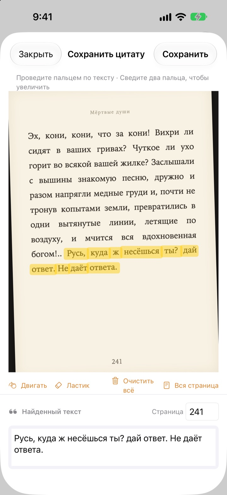
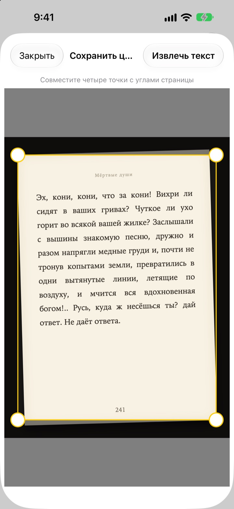
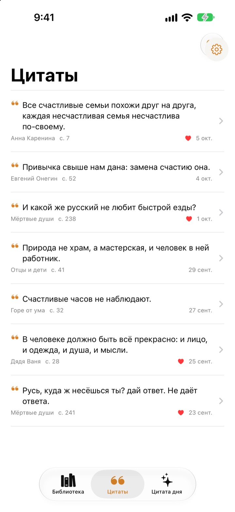
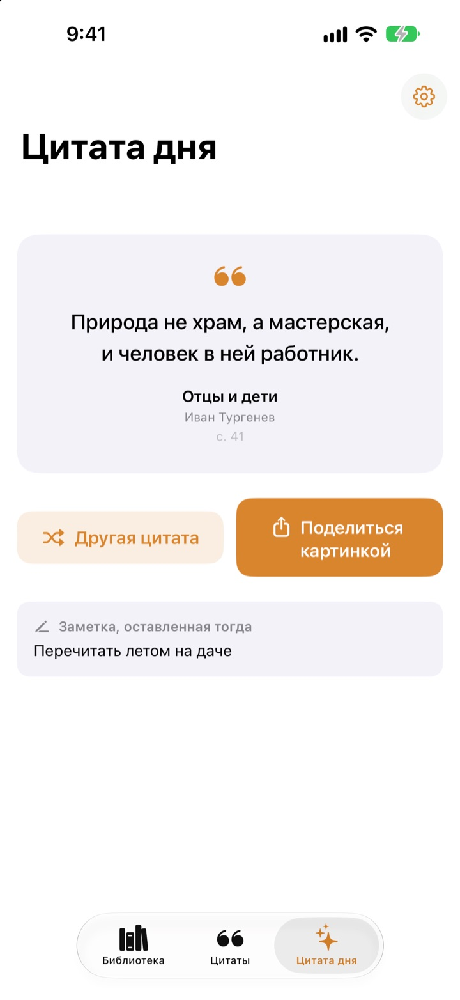

Подчёркивайте книги
без карандаша
Сфотографируйте страницу, проведите пальцем по понравившемуся предложению, и в текст превратится только оно. Книга и номер страницы сохранятся вместе с ним.
Все функции бесплатны, рекламы нет.

Попробуйте сами
Проведите пальцем или мышью по любому предложению на странице ниже. На карточку попадут только те слова, которых вы коснулись.
Куда деваются хорошие строки?
Книга библиотечная, в ней не попишешь. Фото страницы теряется среди тысяч снимков в медиатеке. Перепечатаете в заметки, и название с номером страницы почти всегда остаются за бортом. Bookmark Shot сохраняет предложение, книгу и страницу в два движения: сфотографировать и провести пальцем.
Кривой снимок, ровная страница
Сфотографировав страницу, совместите четыре угла, и даже снятая под углом страница выровняется, как лист бумаги. Чем чётче буквы, тем точнее распознавание.
Подойдут и фото, которые уже есть в медиатеке.

Все цитаты в одном месте
Книги стоят на полке с обложками, а цитаты собраны в одном списке. Ищите по тексту, заметке или названию книги и отмечайте сердечком то, что хочется перечитать.
Книгу можно добавить одним снимком обложки. Название и автор заполнятся сами, а если в кадре штрихкод с задней обложки, то и ISBN.

Встреча с забытыми строками
Цитата дня каждый день возвращает одну из сохранённых цитат вместе с вашей заметкой. Держите её на экране «Домой» или на экране блокировки с помощью виджета.
Понравилась? Сделайте из неё карточку в стиле бумажного листа и поделитесь.

Три шага для начала
- 1
Снимите обложку
Название и автор заполнятся сами. Перед сохранением их можно изменить.
- 2
Снимите страницу
Совместите четыре угла, и она выровняется.
- 3
Проведите по строке
Номер страницы найдётся и сохранится вместе с ней.
Инструменты экрана выделения
- Провести пальцем
- выбирает только слова, которых вы коснулись
- Развести два пальца
- увеличивает страницу для точного выделения
- Перемещение
- сдвигает увеличенную страницу
- Ластик
- убирает выделенные слова
- Очистить всё
- снимает выделение со всех слов
- Вся страница
- сохраняет весь текст страницы
- Поле страницы
- найденный номер страницы, можно изменить
С VoiceOver дважды коснитесь строки, чтобы добавить или убрать её.
Все функции бесплатны
Бесплатно
- Добавление книг по обложке, ISBN по штрихкоду
- Выравнивание страниц и выделение пальцем
- Автоматический номер страницы
- Полка, поиск по цитатам и избранное
- Цитата дня с виджетами для экрана «Домой» и экрана блокировки
- Отправка цитаты в виде карточки
- Синхронизация через iCloud
Поддержать разработчика
- По желанию можно оставить небольшие чаевые в настройках
- Чаевые ничего не открывают. Приложение остаётся тем же
Без рекламы и подписки.
Вопросы
Мои фото или цитаты куда-то отправляются?
Нет. Текст распознаётся полностью на устройстве с помощью Apple Vision, а фото и цитаты никогда не попадают на сервер. Всё работает и без интернета. Подробнее в Политике конфиденциальности ниже.
Какие языки распознаются?
Текст распознаёт сама iOS прямо на устройстве. Поддерживаются книги на корейском, английском, японском, китайском, русском и большинстве западноевропейских языков, а в новых версиях iOS также на тайском, вьетнамском, турецком, индонезийском, польском, чешском, нидерландском и скандинавских языках. Греческий пока не распознаётся.
Как выбрать только нужное предложение?
Сфотографировав страницу, проведите пальцем по предложению, как маркером, и выберутся только эти слова. Для точности увеличьте снимок двумя пальцами. Есть также ластик, «Очистить всё» и «Вся страница».
Название или автор распознались неправильно.
Обложка распознаётся по размеру шрифта, поэтому на очень декоративных обложках возможны ошибки. Название и автора можно исправить перед сохранением книги.
Номер страницы неверный.
Он считывается с цифр у края снимка. Просто исправьте его в поле страницы перед сохранением.
Можно ли видеть цитаты на нескольких устройствах?
Да. Если вы вошли в iCloud с одним и тем же Аккаунтом Apple и включили iCloud Drive, книги и цитаты синхронизируются автоматически.
Как добавить виджет?
Коснитесь и удерживайте экран «Домой», нажмите «Изменить» > «Добавить виджет» и выберите Bookmark Shot. Для экрана блокировки коснитесь его и удерживайте, затем нажмите «Настроить». Там и появится цитата дня.
Не работает камера.
Проверьте в «Настройки» > Bookmark Shot, что разрешён доступ к камере и фото. Для съёмки нужен настоящий iPhone.
Что нужно для работы?
iPhone с iOS 17.0 или новее.
Как с вами связаться?
Отправьте отзыв с экрана настроек приложения (значок шестерёнки) или напишите на почту, указанную ниже. Обычно мы отвечаем в течение двух-трёх дней.
Вопросы или отзывы? Пишите на leeo@kakao.com.